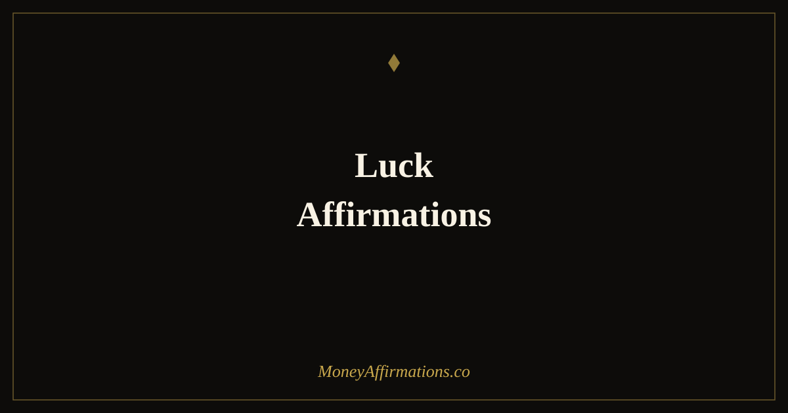

Luck Affirmations: 30 Statements to Attract Fortune and Good Outcomes

There is a particular kind of person who seems to move through life in a state of quiet, ongoing good fortune. Things find them. Opportunities appear at the right moment. Financial surprises tend to be pleasant ones. Connections arrive that change their direction in ways they could not have planned. From the outside, this looks like luck. From the inside, it is often simply a deep, settled belief: I am a lucky person, and good things come to me.
That belief is not naive. It is a functional identity that changes how a person shows up, what they notice, and how they respond to the world around them. These 30 luck affirmations are designed to build that identity from the inside out — not by denying difficulty, but by cultivating a genuine, stable sense that fortune is something you carry with you rather than something that occasionally visits.
What are luck affirmations?
Luck affirmations are identity-level statements that affirm you as a person to whom fortune flows naturally. Where affirmations for good luck focus on the actions and preparations that create fortunate circumstances, luck affirmations work at a deeper level — on the sense of self. They build the felt conviction that good things come to you, that fortune finds you, and that unexpected blessings are a normal feature of your life rather than a rare exception.
This identity-based approach means you carry the orientation of a lucky person into every situation you enter. These affirmations sit naturally alongside the abundance affirmations collection, which explores the full landscape of receiving, openness, and financial flow.
30 luck affirmations
- I am a lucky person, and good things find their way to me reliably.
- Fortune flows in my direction as a natural consequence of who I am.
- Unexpected blessings are a regular feature of my life.
- I am always in the right place at exactly the right time.
- Good things come to me from directions I never anticipated.
- I carry a fortunate energy that draws positive outcomes into my world.
- Life is generous to me, and I receive its generosity with open hands.
- I attract the connections, conversations, and coincidences that change things for the better.
- My good fortune is consistent, reliable, and growing.
- I am the kind of person things work out for.
- Unexpected financial windfalls make their way to me regularly.
- I am aligned with the fortunate flow of life, and I stay there.
- Good luck is not a stranger to me — it is a constant companion.
- The right opportunities appear in my life at precisely the moment I need them.
- I receive unexpected help from people I least expected it from.
- Fortune favours me because I am open, expectant, and genuinely grateful.
- Even when things seem to go wrong, they tend to work out better than I hoped.
- I am someone life rewards with good surprises.
- I move through my days with the settled confidence of a person who knows things will be fine.
- My financial life contains more pleasant surprises than disappointments.
- I attract the right information at the right time to make the best decisions.
- Doors open for me that I did not even know were there.
- I recognise good fortune when it arrives, even in unexpected packaging.
- I am a magnet for positive outcomes, fortunate timing, and unexpected abundance.
- Things fall into place for me in ways that continue to delight and surprise me.
- My life has a current that runs in the direction of good, and I trust it completely.
- I wake each morning knowing that today holds the possibility of something wonderful.
- Good luck is not something I wait for — it is something I am.
- The universe has a habit of delivering to me more than I asked for.
- I live in a state of constant, quiet, genuine good fortune.
How to use these affirmations
Because luck affirmations work at the level of identity, the goal when using them is not just recitation but genuine identification. As you read each statement, try to locate any evidence in your own life that makes it believable — even partial, even small. A moment when something worked out unexpectedly well. A coincidence that led somewhere good. A financial event that arrived at just the right time. Anchoring the affirmation to real memories, however modest, makes the identity claim feel earned rather than invented.
A simple daily ritual: choose three of these affirmations each morning. Read them slowly. After each one, recall one moment from your life where it was true, or even partially true. Let yourself feel the sense of that moment briefly before moving to the next. This practice of memory-anchored affirmation is more effective at building genuine belief than rapid, disconnected repetition.
Carry one affirmation as a quiet internal statement throughout the day. When something small goes right — a parking space, a timely email, a conversation that lifts you — silently affirm the belief: "I am someone good things happen to." These micro-confirmations, accumulated over weeks, build the fortunate identity faster than any single session.
Luck as identity — how carrying a lucky self-concept changes everything
Identity beliefs are among the most powerful determinants of behaviour because they operate continuously and unconsciously, shaping perception, interpretation, and response across thousands of micro-moments each day. When you carry the self-concept "I am a lucky person," it functions as a persistent filter on your experience of the world.
Psychologist Carol Dweck's research on mindset showed that the beliefs people hold about their own nature — fixed or fluid, limited or capable — profoundly shape what they attempt, how they persist, and how they recover. A "lucky identity" functions similarly: it creates a filter that makes fortunate events more salient and memorable, unlucky events more transient, and ambiguous situations more full of possibility.
There is also a social mechanism at work. People who carry themselves as fortunate — with relaxed confidence and warm openness rather than guarded anxiety — are genuinely treated differently by others. They are offered things, confided in, recommended, and included in opportunities that never quite reach those who radiate wariness or low expectation. The lucky self-concept produces a subtle but real change in how you are perceived, which changes the kinds of interactions and offers that find their way to you.
Financially, a lucky identity shifts your relationship to financial risk. People who believe they are lucky are more willing to make the educated gambles — the investment, the pitch, the application — that sometimes produce the financial breakthrough. They are not reckless; they are simply less paralysed by the fear of an unlucky outcome, which means they act more often and therefore succeed more often.
Tips to make these affirmations work faster
- Build a luck journal. Each evening, write down one thing that went unexpectedly well that day — however small. Over time this becomes a powerful archive of evidence supporting your lucky identity, and reviewing it primes your attention to notice more of the same.
- Say it aloud with conviction. Luck affirmations are identity claims. Speaking them aloud, in a clear and grounded voice, registers differently than reading silently. The sound of your own voice making the claim is part of what builds the belief.
- Act as your lucky self would act. Ask yourself: if I were genuinely a lucky person, would I apply for this, ask for this, try this? If the answer is yes, do it. Behaviour that aligns with your claimed identity reinforces that identity faster than words alone.
- Let go of counting unlucky moments. The practice of mentally tallying bad things that happen is a direct counterweight to luck affirmations. When something goes wrong, note it, respond to it, and release it rather than adding it to a running tally of evidence against your fortune.
- Pair with financial affirmations. Luck affirmations open you to unexpected financial good; financial affirmations build the deliberate capacity to earn and grow wealth. Using both together creates a complete orientation toward financial abundance from both directed effort and open receptivity.
Frequently Asked Questions
What is the difference between luck and fortune?
In common usage, luck tends to refer to random, chance-driven events — being in the right place at the right time by accident. Fortune carries a broader meaning, often suggesting an ongoing favourable state or a sustained pattern of positive outcomes, sometimes linked to character or fate. In affirmation practice, the distinction matters less than the felt sense of being someone to whom good things come — which is what both luck and fortune affirmations aim to cultivate.
Can you become a luckier person through affirmations?
Yes, in a meaningful sense. Affirmations that build a lucky identity change how you perceive and interact with your environment. Carrying the self-concept of a lucky person increases openness to unexpected opportunities, reduces fear-based avoidance, and heightens alertness to positive coincidences. These changes in perception and behaviour produce outcomes that look — to both you and observers — like consistently better luck. The mechanism is psychological rather than metaphysical, but the results are real.
How do luck affirmations interact with financial affirmations?
Luck affirmations and financial affirmations reinforce each other directly. Financial affirmations build belief in your capacity to earn, save, and grow money through deliberate effort. Luck affirmations add the dimension of openness to unexpected financial blessings — the windfall, the unexpected contract, the business connection made by chance. Together they cover both the effortful and the receptive aspects of financial prosperity, creating a more complete internal orientation toward abundance.
To build this fortunate orientation across your full financial life, explore the abundance affirmations collection — 80 statements covering openness, gratitude, receiving, and the expansive belief that there is always more available to you than you can currently see.